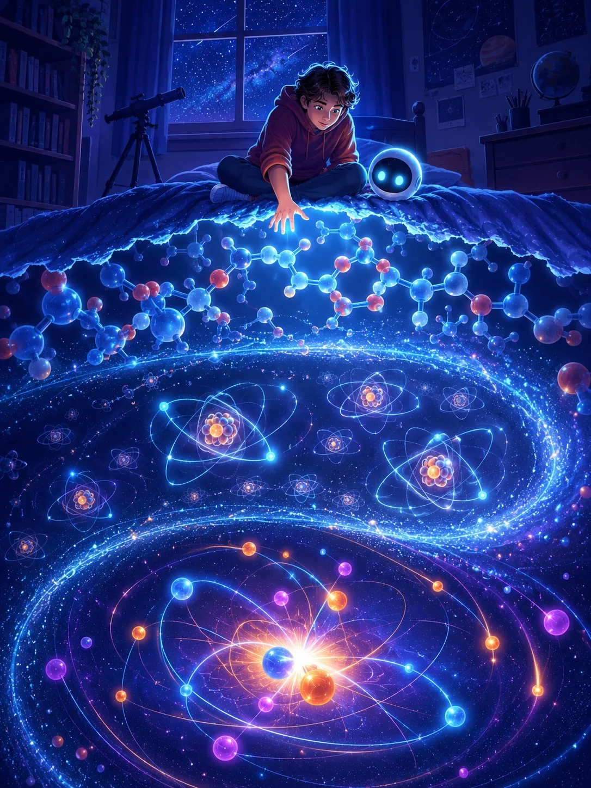

Invisible Universe
Every atom in your body, every star in the sky, every invisible thing science hasn't named yet — it all comes down to a handful of impossibly small particles playing by impossibly strange rules. This is a journey from the everyday world you can touch, down and down and down, until "small" stops meaning anything at all.

A breathtaking editorial illustration for a teen science book cover: a curious young explorer with a small glowing spherical AI companion, standing at the edge where an ordinary starlit bedroom dissolves into a cutaway journey down through molecules, atoms, and glowing subatomic particles arranged like a spiral nebula. Deep indigo night-sky palette with a single luminous cyan-blue accent light, glowing constellation-like particle trails, sense of wonder and scale, flat-modern editorial illustration style, no text or logos baked in. Target size ~1024×1365px, 3:4 portrait; compose for a book cover, subject centred with safe margins on all sides since it is letterboxed into a 3:4 box.
Generate this with your image agent, then drop the file here.
Contents
Follow Mira and her tiny AI guide, Nova, as they shrink — scale by scale — from the room around you into the quantum field underneath everything.
Part I — Where To Begin
Part II — Inside the Proton
Part III — The Other Family of Matter
Part IV — The Forces That Push and Pull
Part V — The Particle That Gives Things Mass
Part VI — Where the Rules Get Strange
Part VII — How We Actually Look
Part VIII — What's Left To Find
→ Jump to the Cheatsheet for a dense one-page reference: the Standard Model table, the four forces compared, a glossary, a discovery timeline, and the people who found it all.